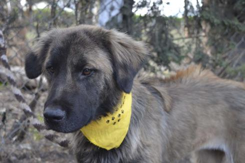
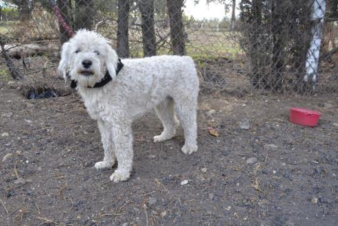

Portafolio Perritos
-
Max
Max es muy cariñoso y juguetón. Víctima del abandono sigue en espera de un hogar. Esa ternura y amor lo podrías estar recibiendo tu.
Adoptar
-

Emma
Su particular cresta hace que esta peluda se vea hermosa y elegante. Busca un hogar que la acoja de por vida.
Adoptar
-
Clara
Esta hermosa peluda es bastante activa y juguetona. Busca hogar que este dispuesto a ayudarla a sacar toda esa energía.
Adoptar
-
Tintin
Tintin tiene dos años y es un buen compañero para una familia que esté dispuesta a protegerlo y cuidarlo con amor
Adoptar
-
Zuly
Zuly tiene solo 4 mes y se encuentra lista para ser adoptada. Es muy juiciosa y tímida pero va a adaptarse rapidamente.
Adoptar
-

Jack
Este motosito busca una familia que esté dispuesta no solo a darle amor sino también a recibir mucho cariño.
Adoptar